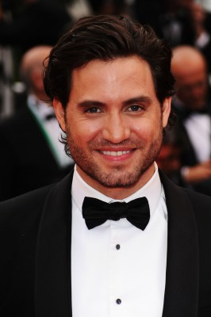
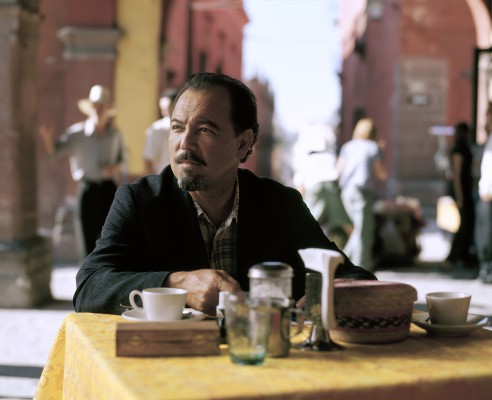
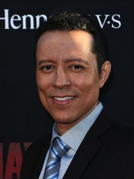
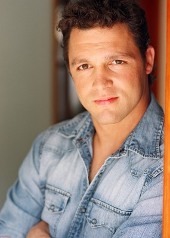

#8647 Hands of Stone - Fäuste aus Stein


 IMDB-Wertung: 6.6 / 10
IMDB-Wertung: 6.6 / 10  Metascore: 0
Metascore: 0 
Ray Arcel (Robert De Niro) hat als Boxtrainer so ziemlich alles gesehen in seiner langjährigen Karriere – zumindest glaubt er das. Doch als er dann zum ersten Mal das außergewöhnliche Talent von Roberto Duran (Edgar Ramírez) mit eigenen Augen zu sehen bekommt, ist er ganz aus dem Häuschen. Duran, den man auch „Hände aus Stein“ nennt, weil er angeblich als Teenager ein Pferd mit seinen Fäusten zu Boden geschlagen haben soll, ist das womöglich größte Boxtalent, das Arcel über den Weg gelaufen ist. So ganz grün sind sich die beiden speziellen Charakterköpfe trotzdem zunächst nicht, als sie beginnen zusammenzuarbeiten, aber der Erfolg gibt ihnen schon bald recht. Doch alles droht zu zerbrechen, als Duran bei seinem zweiten Meisterschaftskampf gegen den legendären Sugar Ray Leonard (Usher Raymond) plötzlich das Handtuch in den Ring wirft und seine Karriere beenden will...
Jahr: 2016
Dauer: 111 Minuten
FSK: 12
Land: Panama Studio: Ascot Elite Entertainment GroupTonspuren: DTS - ,
Untertitel: Englisch,
Auflösung: 1080p (1920x800) Größe: 6840 MB
Genre: Action, Drama, Sport, Biographie
Regisseur: Jonathan Jakubowicz
Drehbuch: Jonathan Jakubowicz
Soundtrack: Angelo Milli
Darsteller:
-  Edgar Ramírez als Roberto Durán
 Robert De Niro als Ray Arcel
Robert De Niro als Ray Arcel Usher Raymond als Sugar Ray Leonard
Usher Raymond als Sugar Ray Leonard-  Rubén Blades als Carlos Eleta
 Ana de Armas als Felicidad Iglesias
Ana de Armas als Felicidad Iglesias Óscar Jaenada als Chaflan
Óscar Jaenada als Chaflan John Turturro als Frankie Carbo
John Turturro als Frankie Carbo Ellen Barkin als Stephanie Arcel
Ellen Barkin als Stephanie Arcel- Jurnee Smollett-Bell als Juanita Leonard
-  Yancey Arias als Benny Huertas
 Drena De Niro als Adele
Drena De Niro als Adele- Ilza Ponko als Clara Samaniego
-  Anthony Molinari als Marine Molinari
 Rick Avery als Gil Clancey
Rick Avery als Gil Clancey- Robb Skyler als Howard Cosell
- Joe Urla als Angelo Dundee
- Eliud Kauffman als Margarito Duran
- Khalid Ghajji als Roger Leonard
- John Duddy als Ken Buchanan
- Aaron Zebede als Eugenio Iglesias
- Leo Wiznitzer als Head Commisioner
- Robin Duran als Pototo Duran
- Anthony Famulari als Waiter
- Carlos Alfredo Lopez als Panamanian Journalist
- Adrian Scott als Don Dunphy
 Reg E. Cathey als Don King (uncredited)
Reg E. Cathey als Don King (uncredited) Jimmy Carter als Himself (archive footage) (uncredited)
Jimmy Carter als Himself (archive footage) (uncredited)- David Joseph Keller als Announcer (uncredited)
- Brianna Meighan als Blonde Groupie Girlfriend to Pachanga Lopez (uncredited)
- Pedro Perez als Plomo
- Israel Isaac Duffus als Davey Moore
- Janelle Davidson als Sharon Leonard
- Roberto Chavo Duran als Toti
- Alexander Salazar als Latin Marine
- Matt Doherty als Judge
- Kevin Foster als Robin Duran
- Max Cooper als US Marine
- Marcy Weisleder als Young Girl
- David Roubik als US Marine
- Alfredo Popa Arias als Rufirio
- Daniel Tamayo als Chivo Sanjur
- Ken Oefelein als Restaurant Patron
- Luis Alfonso Ceballos als Kid Toti
- Rony Quesada als Cop at Fish Stand
- Michael Sager als John Condon
- Hector Afu als Amateur Referee
- Gary Rosato als Johnny Lobianco
- Manuel Leiva als Octavio Meyran
- Tamar Gutman als Waitress
- Ana Lucia Garcia de Paredes als Irichelle Duran
Datei: X:\2016(G-M)\Hands of Stone - Fäuste aus Stein (2016, FSK12, 1920x800).mkv seit 11.04.2018
Festplatte: HD 2016(A-Z)
 Es gibt insgesamt 164 Filme in der Gruppe '2016(G-M)'
Es gibt insgesamt 164 Filme in der Gruppe '2016(G-M)'